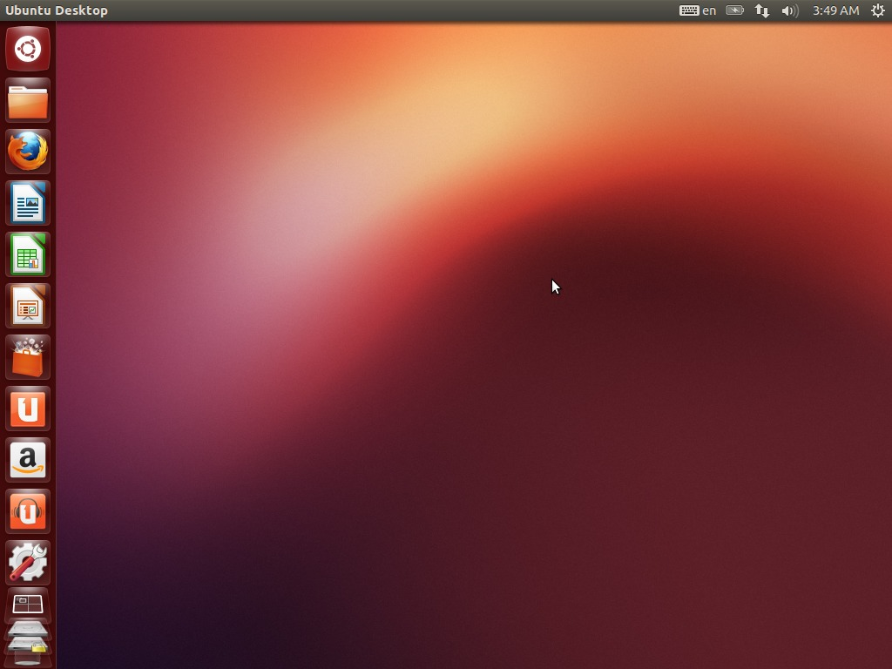
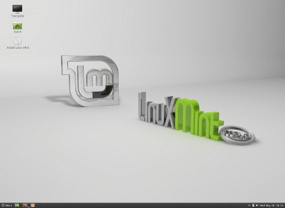
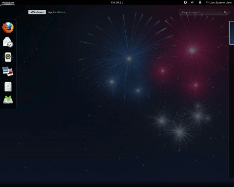
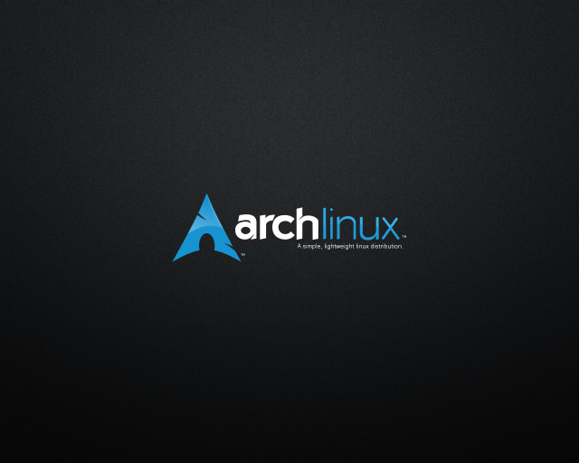

Choosing a Linux distribution may seem like a daunting task. In fact, there are hundreds of distributions out there; dozens of them worthy contenders for most computers. However the ability to choose between them has improved remarkably in recent years.
Ask any Linux user "What distro should I use?" and the answer will most likely be "go with what you need." Every distribution has their strong points and their weak points. To begin, make a list (mental or otherwise) of what you seek to accomplish with your comptuer:
This is by no means an exhaustive list of Linux distros; only a list highlighting the most popular choices. For a more detailed list and comparison, visit Distrowatch.
The distros here are listed by their general ease-of-use and ease of install; Ubuntu being the easiest and Arch the most difficult. The inverse is true for the amount of say you have in packages installed by default: Arch is most customizable in this regard, while Ubuntu is the most restricted.

Ubuntu (and its derivatives) is the most popular choice of distribution for Linux users. It is very easy to use, giving users the option of using the system without meddling with the command line at any point. This grants the user with an experience similar to Windows and Mac OS X. In these respects, Ubuntu is the "easiest" distribution to get into and to learn, and is a great choice for beginners. With an emerging hold in the business and server market, Ubuntu is seen as being a stable and consistent option as far as distributions are concerned, with a company (Canonical Ltd) in charge of its development and maintenance. While recent releases have not quite lived up to its own high standards it has achieved in the past, Ubuntu remains a solid choice and a logical conclusion for Linux beginners.

Linux Mint originally began as a derivative of Ubuntu. It is maintained by a community that wanted to take some features of Ubuntu in new directions. The most notable difference between Mint and Ubuntu is its readily-enabled freedom to choose one's own graphical (desktop) environment. Other than that, both Ubuntu and Mint are based off of Debian, making them closely related systems in terms of maintenance and preferred software suites. Mint also includes its own suites of software to manage specific functions, which adds to this distribution's ease-of-use.

Fedora is the community-run stepchild of one of the oldest and most well-known Linux distributions, Red Hat Linux. Now that Red Hat is only available for enterprise applications, Fedora is the distribution that is being offered to general end users. Fedora is different from both Ubuntu and Linux Mint in that it is not based off of Debian; therefore it uses a different package management system as well as its own suite of applications and services. Fedora is considered to be a stable and mature distribution, perhaps not with the same ease-of-use that Ubuntu provides, but is not far behind. It is a decent choice for intermediate computer users, as well as beginners to Linux looking for more of a challenge.

Arch Linux prides itself on its core philosophy: "Keep It Simple, Stupid!" In line with this idea, Arch tries to keep its distribution as clean and free of unneccessary clutter as possible. While systems like Ubuntu include resource-heavy front-ends like the Unity window manager and many application suites installed by default, Arch prefers to let the user choose what they want their system to be by default. This way allows for maximum customization and minimum time lost working with conflicting or unused and bloated software tools. Arch also differs from most other distributions in that it prefers a rolling-release style; where other distributions each have versions and releases of their software, Arch stays on the cutting edge by providing all updates through pacman once they are available.
These characteristics admittedly makes Arch one of the hardest Linux distributions to install and maintain, as everything must be selected by the user, installed and maintained without the kinds of blueprints that other distributions might offer. However the Arch community is very friendly, close-knit and features an amazing Wiki full of documentation. Arch is a great choice for power-users or those looking for a serious challenge with maximum reward and customization opportunity.